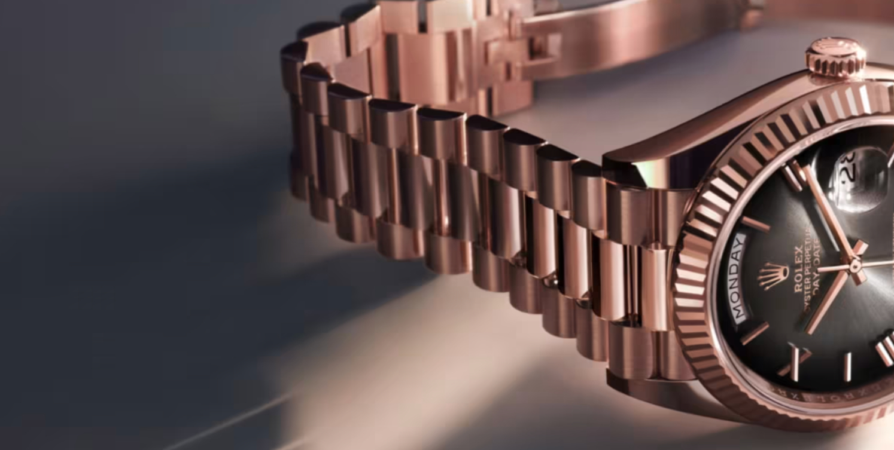

Watch Bracelets
The most crucial element defining how beautiful or appropriate a bracelet is, in VC.P’s view, is its taper: the links become progressively narrower from the watch head toward the clasp. If the end link—the part connecting the watch head and bracelet—is 20 mm wide, the link at the clasp should be 18 mm or 16 mm. The exact number does not matter. What matters is the tapering flow. Without it, your watch will look like a chain around your wrist. A difference of between 2 mm and 4 mm is considered appropriate.
The end link’s primary aesthetic function is to transition from the “squareness” of the bracelet links to the “roundness” of the watch head—or to whatever shape the case may take. The point is to make the change gradual.
This returns us to the ideology of “flow.” All components should interconnect, with no awkward gaps in the transitions from watch head to bracelet or bracelet to clasp. The end link is therefore an important adapter between bracelet and case.
